ಕೇಂದ್ರೀಯ ಲೆಕ್ಕಪರಿಶೋಧನಾ ಕಚೇರಿಯಿಂದ ಆದೇಶಗಳು ಮತ್ತು ಕನ್ನಡ ಫಲಕಗಳ ಫೋಟೋ; 2024ರಲ್ಲಿ ಮೂರು ಇಂಗ್ಲಿಷ್ ನಾಮಫಲಕ ಪತ್ತೆ, ಎರಡು ಜ್ಞಾಪನಗಳಿಗೂ ಉತ್ತರ ಬಂದಿರಲಿಲ್ಲ
37 ಪುಟಗಳು: ಎರಡು ಪುಟದ ಉತ್ತರ (ಇ-ಮೇಲ್ನಲ್ಲೂ ಅದೇ), ರಾಜಭಾಷಾ ಇ-ಮೇಲ್ ಮತ್ತು ಐದು ಕಚೇರಿ ಆದೇಶಗಳು, ಆರು ಫಲಕಗಳ ಫೋಟೋಗಳು, ಹಾಗೂ 2024ರ ಒಂದು ಪತ್ರ ಮತ್ತು ಮೂರು ಆಂತರಿಕ ಜ್ಞಾಪನಗಳು (ಹಿಂದಿಯಲ್ಲಿ).
DGPDB/R/E/26/00010ಕೇಳಿದ್ದು ಏನು, ಬಂದ ಉತ್ತರ ಏನು
| 1OM ಅಡಿ ಹೊರಡಿಸಿದ ಸುತ್ತೋಲೆಗಳು | ರಾಜಭಾಷಾ ವಿಭಾಗದ ನಿರ್ದೇಶನದಂತೆ ಪ್ರದೇಶ ‘ಸಿ’ಯಲ್ಲಿ ಫಲಕಗಳು “Trilingual format (I.e. Regional language, Hindi and English)” ಇರಬೇಕು ಎನ್ನುತ್ತದೆ; ಪತ್ರದಲ್ಲಿ 04.06.2024ರ ಇ-ಮೇಲ್ ಎಂದು ಪಟ್ಟಿ ಮಾಡಿದ್ದರೂ ಲಗತ್ತಿಸಿರುವುದು 2025-26ರ ವಾರ್ಷಿಕ ಕಾರ್ಯಕ್ರಮ ಕಳುಹಿಸಿದ 26.03.2025ರ ಇ-ಮೇಲ್; ಜೊತೆಗೆ 26.03.2025, 07.05.2025 ಮತ್ತು 27.05.2025ರ ಕಚೇರಿ ಆದೇಶಗಳು |
|---|---|
| 2ಕನ್ನಡ ಬಳಕೆಗೆ ಕೈಗೊಂಡ ಕ್ರಮ | ನಿಯಮ 11ರ ಪಾಲನೆಯ ತಪಾಸಣಾ ಅಂಶಗಳ ಎರಡು ಆದೇಶಗಳು ಲಗತ್ತು: 09.06.2025 ಮತ್ತು 01.04.2026 |
| 3ತಪಾಸಣೆ / ಅನುಸರಣಾ ವರದಿಗಳು | “Not required to issue any inspection reports, compliance reports, Internal audits or review reports as since January, 2025, no violation of rule 11 … has been observed in this office.” ಫಲಕಗಳ ಫೋಟೋ ಲಗತ್ತು |
| 4ಅನುಸರಣೆ ಇಲ್ಲದೆಡೆ ಸರಿಪಡಿಸುವ ಕ್ರಮ | 2024ರ ನಾಲ್ಕು ಆಂತರಿಕ ಪತ್ರಗಳು ಲಗತ್ತು (27.02.2024, 29.04.2024, 03.07.2024, 24.07.2024): 10 ಇಂಗ್ಲಿಷ್ ಮೊಹರು ಮತ್ತು 3 ಇಂಗ್ಲಿಷ್ ನಾಮಫಲಕಗಳನ್ನು ಬದಲಿಸಲು ಸೂಚನೆ, ನಂತರ ಎರಡು ಜ್ಞಾಪನಗಳು |
| 5ಮೇಲ್ವಿಚಾರಣೆಯ ಹೊಣೆ ಹೊತ್ತ ಅಧಿಕಾರಿ | “Shri Deepak Mathews, Principal Director of Audit (Central)”; ವಿಭಾಗ: “Official Language Section/PDA(C)” |
ಇದೇಕೆ ಮುಖ್ಯ
ಲಗತ್ತಿಸಿದ ಹಳೆಯ ದಾಖಲೆ 2024ರದ್ದು; 21.06.2022ರ OM ಅನ್ನು ಯಾವ ಆದೇಶವೂ ನೇರವಾಗಿ ಉಲ್ಲೇಖಿಸುವುದಿಲ್ಲ, ಆದರೆ 07.05.2025 ಮತ್ತು 27.05.2025ರ ಆದೇಶಗಳು ಫಲಕಗಳಿಗೆ ಪ್ರಾದೇಶಿಕ ಭಾಷೆ, ಹಿಂದಿ, ಇಂಗ್ಲಿಷ್ ಕ್ರಮವನ್ನು ಸೂಚಿಸುತ್ತವೆ. 27.02.2024ರ ಪತ್ರದ ಪ್ರಕಾರ ಮುಖ್ಯ ಕಚೇರಿ 12-13.02.2024ರ ತಪಾಸಣೆಯಲ್ಲಿ 48 ಮೊಹರುಗಳಲ್ಲಿ 10 ಮತ್ತು 3 ನಾಮಫಲಕಗಳು ಇಂಗ್ಲಿಷ್ನಲ್ಲಿವೆ ಎಂದು ಕಂಡಿತ್ತು; 24.07.2024ರ ಎರಡನೇ ಜ್ಞಾಪನದವರೆಗೂ ಸಂಬಂಧಿತ ವಿಭಾಗದಿಂದ ಮಾಹಿತಿ ಬಂದಿರಲಿಲ್ಲ, ಮತ್ತು ನಂತರ ಕ್ರಮ ಕೈಗೊಂಡ ದಾಖಲೆ ಲಗತ್ತಿನಲ್ಲಿಲ್ಲ. ಆ ತಪಾಸಣಾ ವರದಿಯನ್ನೂ ನೀಡಿಲ್ಲ. ಆರು ಫೋಟೋಗಳಲ್ಲಿ ಕಚೇರಿ ಫಲಕಗಳು ಮತ್ತು ಎರಡು ಆಪ್ತ ಸಹಾಯಕರ ಫಲಕಗಳಲ್ಲಿ ಕನ್ನಡ ಮೊದಲು ಇದೆ. ಉತ್ತರ ಪತ್ರಕ್ಕೆ ದಿನಾಂಕ, ಸಂಖ್ಯೆ ಅಥವಾ ಸಹಿ ಕಾಣುವುದಿಲ್ಲ.


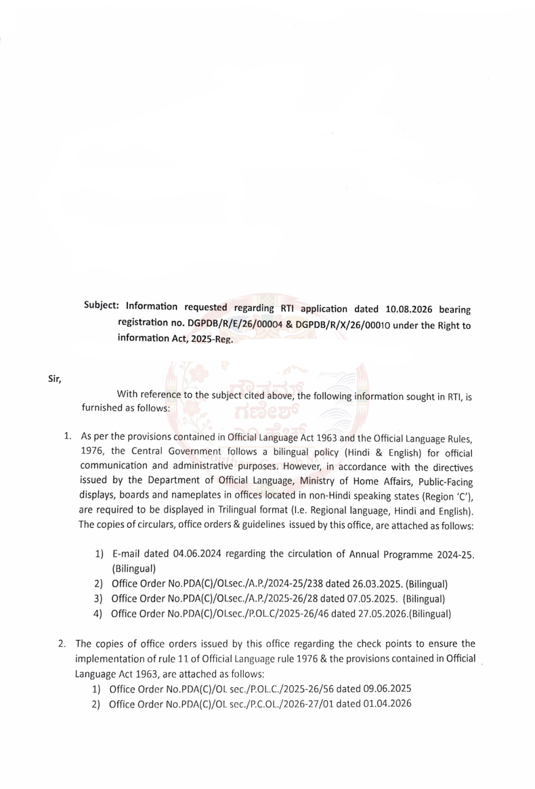

ಇದು Google Translate ಮಾಡಿದ ಯಂತ್ರ ಅನುವಾದ, ಓದಲು ಅನುಕೂಲವಾಗಲೆಂದು ಮಾತ್ರ. ತಪ್ಪುಗಳಿರಬಹುದು. ಅಧಿಕೃತವಾದುದು ಮೂಲ ಹಿಂದಿ ದಾಖಲೆ ಮಾತ್ರ.
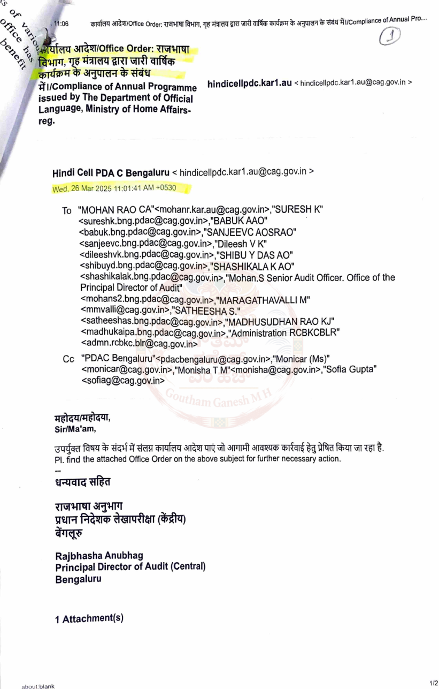
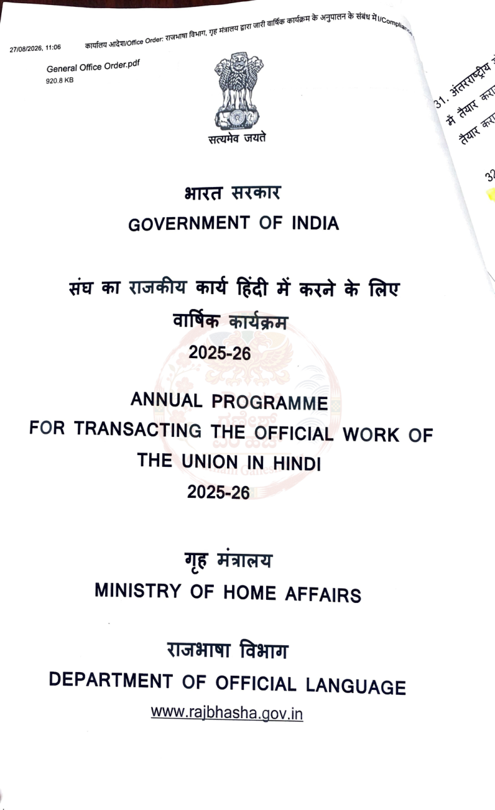
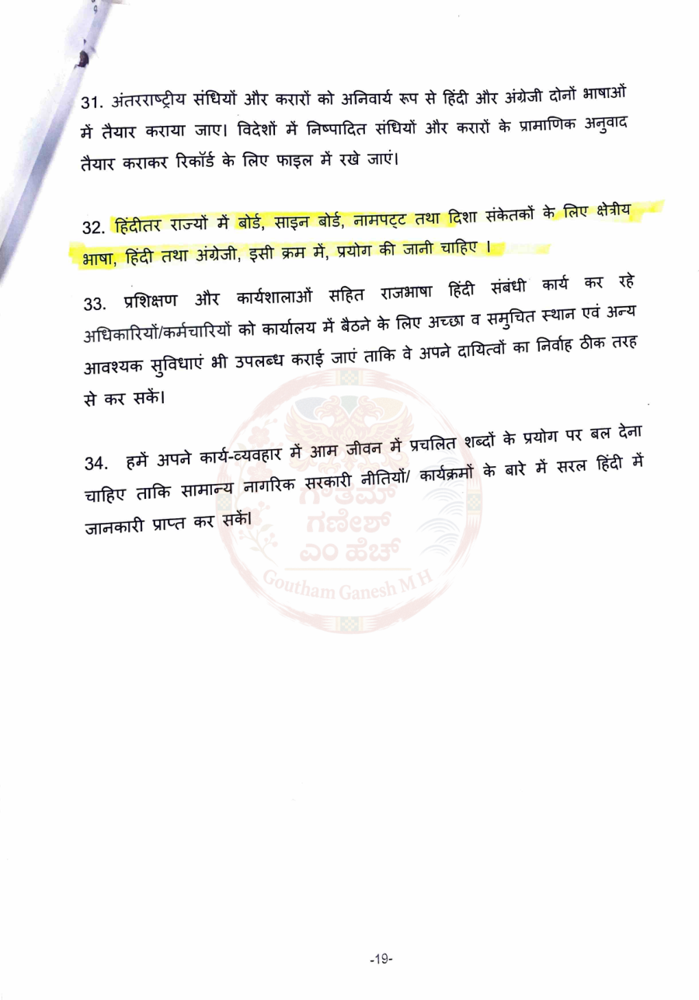
31. International treaties and agreements should be compulsorily prepared in both Hindi and English languages. Authentic translations of treaties and agreements executed in foreign countries should be prepared and kept on file for record.
32. In non-Hindi states, regional languages, Hindi and English, in that order, should be used for boards, sign boards, name plates and direction indicators.
33. Officers/employees doing work related to official language Hindi, including training and workshops, should be provided with good and appropriate space to sit in the office and other necessary facilities so that they can perform their responsibilities properly.
34. We should emphasize on the use of words prevalent in common life in our work so that common citizens can get information about government policies/programs in simple Hindi.

ಇದು Google Translate ಮಾಡಿದ ಯಂತ್ರ ಅನುವಾದ, ಓದಲು ಅನುಕೂಲವಾಗಲೆಂದು ಮಾತ್ರ. ತಪ್ಪುಗಳಿರಬಹುದು. ಅಧಿಕೃತವಾದುದು ಮೂಲ ಹಿಂದಿ ದಾಖಲೆ ಮಾತ್ರ.

Office of the Principal Director of Audit (Central), Bangalore
S.R.R.L.(C)/R.R./R.A./2024-25/238, Date: 26.03.2025
office order
Subject:- Regarding compliance with the annual program issued by the Department of Official Language, Ministry of Home Affairs.
As per the orders of the Principal Director of Audit (Central), in connection with the compliance of the annual program issued by the Department of Official Language, all the wings/sections are directed to do the following:-
1. Documents mentioned in Section 3(3) of the Official Language Act, 1963 (General Orders, Notifications, Press Releases/Notes, Contracts, Agreements, Licenses, Permits), Forms and Notices of Tender (Tender Notices and Tender Forms), Resolutions, Rules, Notices, Government papers (other than reports) presented in one or both Houses of Parliament, Administrative papers presented in one or both Houses of Parliament and other reports, administrative or other reports sent to higher offices), including documents issued through e-mail and other online means (e-Office, OIOS), should be mandatorily issued bilingually and uploaded on the website of the office also in bilingual form.
2. Under Rule 5 of the Official Language Rules, 1976, ensure that replies to letters received in Hindi or signed in Hindi are given in Hindi only so that the instructions can be followed.
3. Under Rule 11 of the Official Language Rules, 1976, ensure that the formats and titles of the registers are written in bilingual. Also try to make entries in registers and service books in Hindi.
4. Addresses on envelopes of letters sent to regions "A" and "B" should be compulsorily written in 100% Hindi so that the instructions issued by the Department of Official Language can be followed.
5. Free self-learning courses "Leela Hindi Prabodh", "Leela Hindi Praveen" and "Leela Hindi Pragya" up to Pragya level are available on the portal of the Department of Official Language in English, Kannada, Malayalam, Tamil and Telugu mediums. The portal address of the Department of Official Language is www.rajbhasha.nic.in. Employees are instructed to try to self-study the above educational courses for Hindi training.
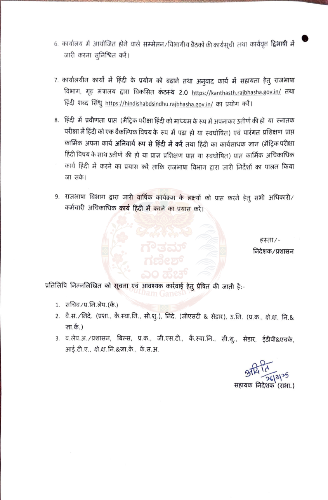
6. Make sure to issue the agenda and minutes of conferences/departmental meetings held in the office in bilingual.
7. To increase the use of Hindi in official work and to help in translation work, use Kanthasth 2.0 (https://kanthasth.rajbhasha.gov.in/) and Hindi word Sindhu (https://hindishabdsindhu.rajbhasha.gov.in/) developed by the Department of Official Language, Ministry of Home Affairs.
8. Personnel who are proficient in Hindi (have passed the matriculation examination using Hindi as a medium or have studied Hindi as an optional subject in the graduation examination or have self-declared) and have received advanced training should compulsorily do their work in Hindi and the personnel who have working knowledge of Hindi (have passed the matriculation examination with Hindi as a subject or have received advanced training or self-declared) should try to do as much work as possible in Hindi so that the instructions issued by the Department of Official Language can be followed.
9. To achieve the goals of the annual program issued by the Department of Official Language, all officers/employees should try to do maximum work in Hindi.
Hasta/- Director/Administration
The copy is sent to the following for information and necessary action:- 1. Secretary/P.P.L.(Central) 2. V.S./Director. (Admn., Central Health Department, C.Sh.), Director. (GST & CEDAR), U.N. (P.A., R.P.N. and Central Govt.) 3. P.E./Administration, Bills, P.R.C., GST, C.P.R., C.S.U., CEDAR, EDP & HK, ITA, R.P.N. And G.K., K.S.A.
Assistant Director (Rab.)
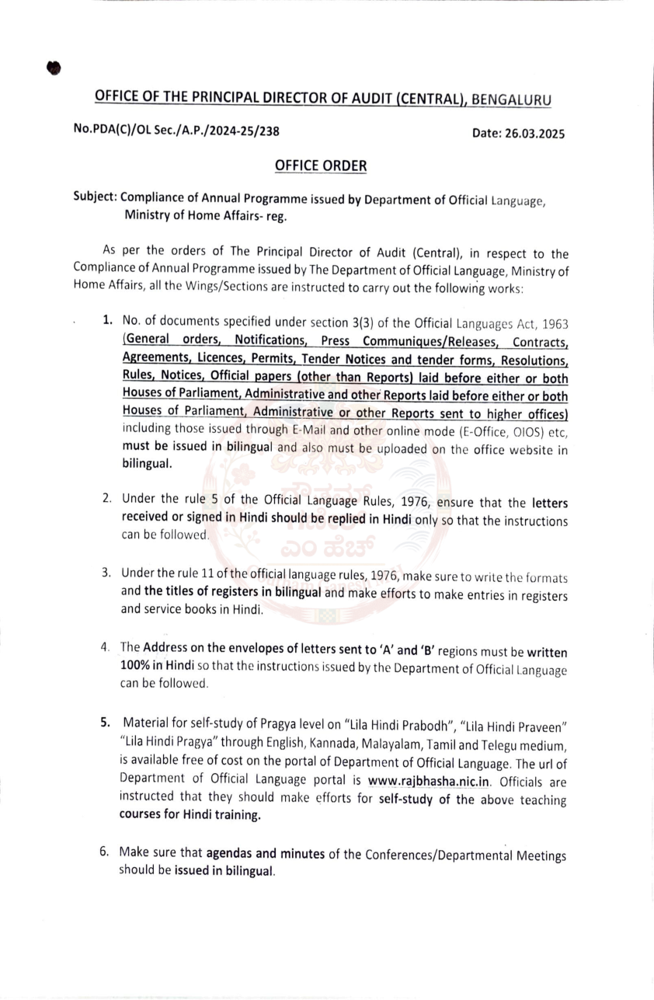

ಇದು Google Translate ಮಾಡಿದ ಯಂತ್ರ ಅನುವಾದ, ಓದಲು ಅನುಕೂಲವಾಗಲೆಂದು ಮಾತ್ರ. ತಪ್ಪುಗಳಿರಬಹುದು. ಅಧಿಕೃತವಾದುದು ಮೂಲ ಹಿಂದಿ ದಾಖಲೆ ಮಾತ್ರ.

Office of the Principal Director of Audit (Central), Bengaluru - Official Language Section
No.R.P.L.Ed.(C)/R.B.R./V.A./2025-26/28, Date: 07.05.2025
office order
Subject: Regarding the annual program 2025-26 for conducting the official work of the Sangh in Hindi.
In pursuance of the Official Language Resolution dated January 18, 1968, the Department of Official Language prepares an annual program for the propagation and progressive use of the official language Hindi for implementation by the Central Government offices every year.
As per the orders of the Principal Director of Audit (Central), in connection with the compliance of the said annual programme, all the wings/sections are directed to do the following:-
1. Under Section 3(3) of the Official Language Act, 1963, resolutions, general orders, rules, notifications, administrative and other reports, press releases, administrative and other reports to be laid before either or both Houses of Parliament and government documents, contracts, agreements, licenses, permits, tender notices and tender forms should be issued bilingually, in both English and Hindi. Under Rule 6 of the Official Language Rules, 1976, it will be the responsibility of the person signing such documents to ensure that such documents are prepared, executed or issued in both Hindi and English languages.
2. According to Rule 5 of the Official Language Rules, 1976, replies to letters etc. received in Hindi in Central Government offices are to be given in Hindi only.
3. In accordance with Rule 11 of the Official Languages Rules, 1976, all manuals, codes and other procedural literature relating to the offices of the Central Government shall be printed or cyclostyled, as the case may be, in bilingual form in Hindi and English and published. The forms and titles of the registers used in any office of the Central Government shall be in Hindi and English. All name plates, notice boards, letter heads and inscriptions on envelopes and other items of stationery for use in any office of the Central Government shall be written and printed or engraved in Hindi and English.
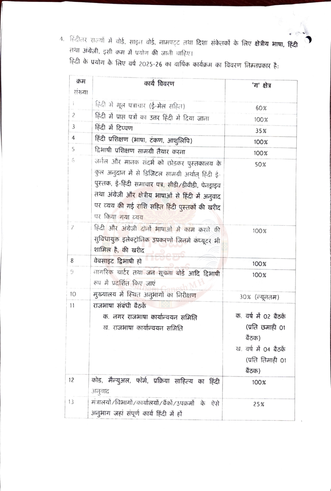
4. In non-Hindi states, regional languages, Hindi and English, should be used in that order for boards, sign boards, name plates and direction indicators.
The details of the annual program for the year 2025-26 for the use of Hindi are as follows (“C” area):
1. Original correspondence in Hindi (including e-mail): 60%.
2. Reply to letters received in Hindi: 100%.
3. Comment in Hindi: 35%.
4. Hindi Training (Language, Typing, Stenography): 100%.
5. Preparing bilingual training materials: 100%.
6. Expenditure on purchase of Hindi books including digital content i.e. Hindi e-books, e-Hindi newspapers, CD/DVD, Pendrives and the amount spent on translation from English and regional languages into Hindi, out of the total grant of the library excluding journals and standard references: 50%.
7. Purchase of electronic equipment, including computers, capable of working in both Hindi and English languages: 100%.
8. Website should be bilingual: 100%.
9. Citizen's Charter and Public Information Board etc. should be displayed in bilingual form: 100%.
10. Inspection of sections located at Headquarters: 30% (minimum).
11. Meetings related to Official Language: A. City Official Language Implementation Committee: 02 meetings in a year (01 meeting per half year). B. Official Language Implementation Committee: 04 meetings in a year (01 meeting per quarter).
12. Hindi translation of code, manual, form, procedure literature: 100%.
13. Sections of Ministries/Departments/Offices/Banks/Undertakings where entire work is in Hindi: 25%.

The government's policy regarding promotion and dissemination of the official language is also that Hindi should be promoted in government work through inspiration, encouragement and goodwill. But along with this, strictness should be taken in following the rules and orders. In this regard, it is noteworthy that under Rule 12 of the Official Language Rules, 1976, it is the responsibility of the administrative head of every office of the Central Government to ensure that the instructions issued under the Official Language Act and the Official Language Rules are properly complied with. If any employee or officer deliberately disregards the provisions applicable regarding the official language, then action can be taken on the basis of violation of rules and orders related to the matter.
Hasta/- Director/Administration
The copy is sent to the following for information and necessary action:- 1. Secretary/P.P.L.(Central) 2. V.S./Director. (Admn., Central Health Department, C.Sh.), Director. (GST & CEDAR), U.N. (P.A., R.P.N. and Central Govt.) 3. P.E./Administration, Bills, P.R.C., GST, C.P.R., C.S.U., CEDAR, EDP & HK, ITA, R.P.N. And G.K., K.S.A. This letter is sent to the Ministry of Finance with the intention of circulating it among its subordinate sections/wings.
Assistant Director (Official Language)


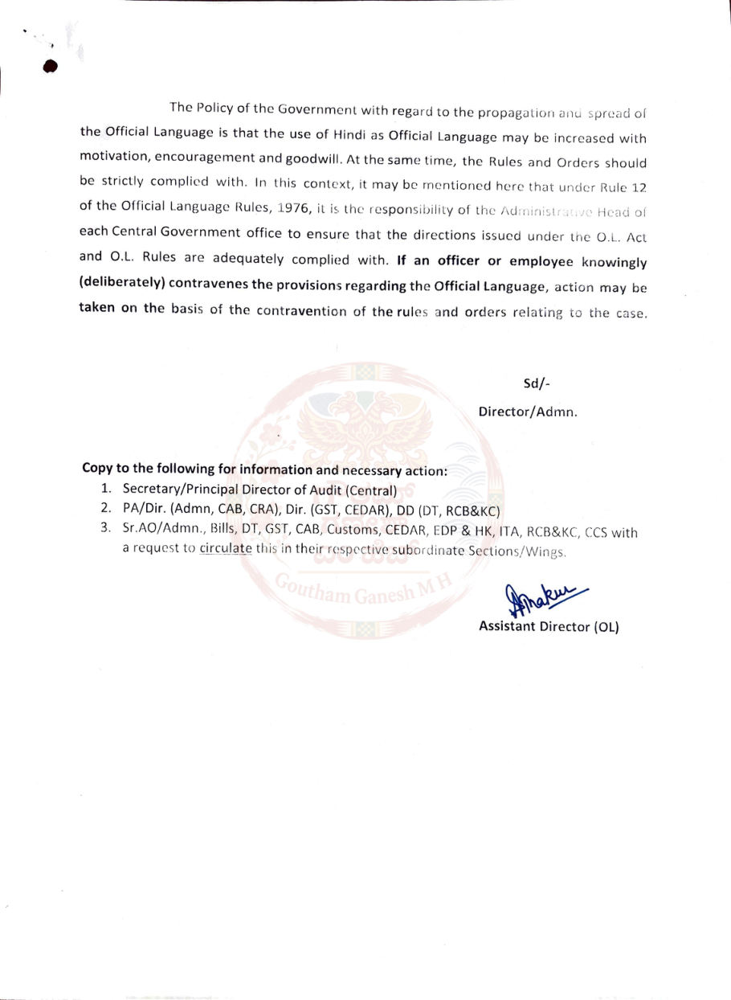
ಇದು Google Translate ಮಾಡಿದ ಯಂತ್ರ ಅನುವಾದ, ಓದಲು ಅನುಕೂಲವಾಗಲೆಂದು ಮಾತ್ರ. ತಪ್ಪುಗಳಿರಬಹುದು. ಅಧಿಕೃತವಾದುದು ಮೂಲ ಹಿಂದಿ ದಾಖಲೆ ಮಾತ್ರ.
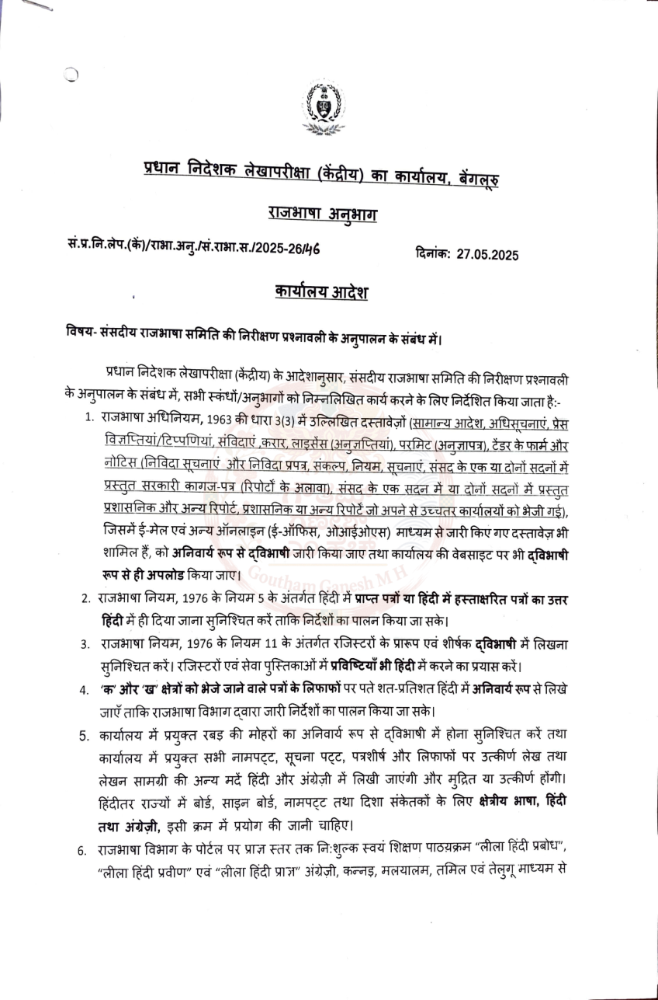
Office of the Principal Director of Audit (Central), Bengaluru - Official Language Section
No.R.R.L.(Central)/R.R./No.R.R./2025-26/46, Date: 27.05.2025
office order
Subject: Regarding compliance with the inspection questionnaire of the Parliamentary Official Language Committee.
As per the orders of the Principal Director of Audit (Central), in respect of compliance with the inspection questionnaire of the Parliamentary Official Language Committee, all Wings/Sections are directed to do the following:-
1. Documents referred to in Section 3(3) of the Official Language Act, 1963 (general orders, notifications, press releases/notes, contracts, agreements, licenses, permits, tender forms and notices (tender notices and tender forms), resolutions, rules, notices, government papers (other than reports) laid in one or both Houses of Parliament), administrative papers laid in one or both Houses of Parliament and other reports, administrative or other reports sent to superior offices), including documents issued through e-mail and other online means (e-Office, OIOS), should be compulsorily issued bilingually and uploaded on the website of the office also in bilingual form.
2. Under Rule 5 of the Official Language Rules, 1976, ensure that replies to letters received in Hindi or signed in Hindi are given in Hindi only so that the instructions can be followed.
3. Under Rule 11 of the Official Language Rules, 1976, ensure that the formats and titles of the registers are written in bilingual. Also try to make entries in registers and service books in Hindi.
4. Addresses on envelopes of letters sent to regions "A" and "B" should be compulsorily written in 100% Hindi so that the instructions issued by the Department of Official Language can be followed.
5. Ensure that the rubber stamps used in the office are compulsorily bilingual and all name plates, notice boards, letter heads and inscriptions on envelopes and other items of stationery used in the office will be written and printed or engraved in Hindi and English. In non-Hindi states, regional languages, Hindi and English, should be used in that order for boards, sign boards, name plates and direction indicators.
6. Free self-learning courses "Leela Hindi Prabodh", "Leela Hindi Praveen" and "Leela Hindi Pragya" up to Pragya level on the portal of Official Language Department through English, Kannada, Malayalam, Tamil and Telugu.
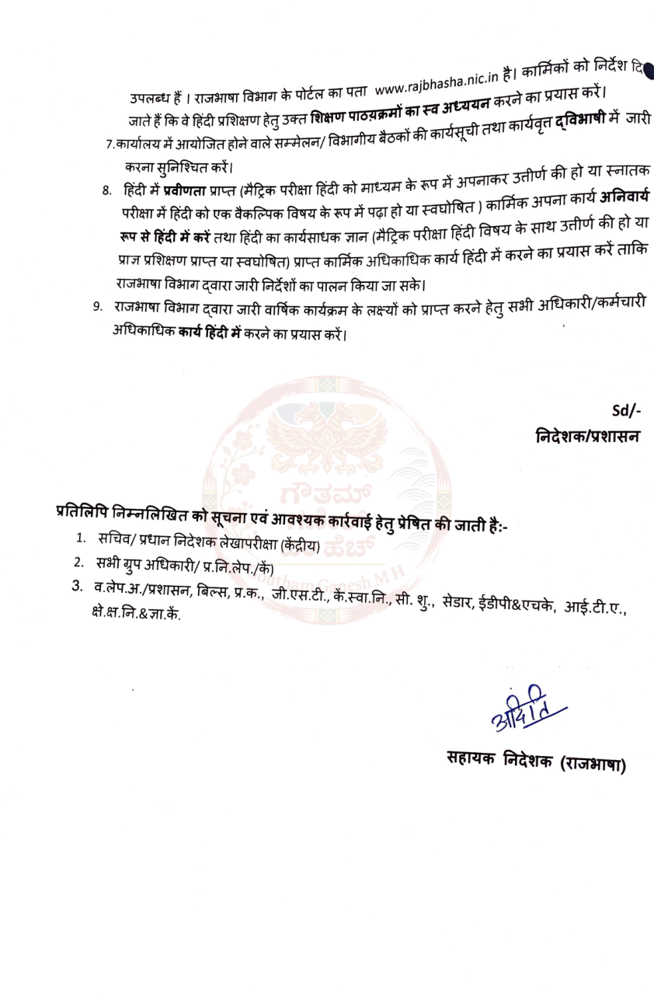
(continued from previous page) are available. The portal address of the Department of Official Language is www.rajbhasha.nic.in. Employees are instructed to try to self-study the above educational courses for Hindi training.
7. Make sure to release the agenda and minutes of conferences/departmental meetings held in the office in bilingual.
8. Employees who have proficiency in Hindi (have passed the matriculation examination with Hindi as the medium of instruction or have studied Hindi as an optional subject in the graduation examination or have self-declared) should compulsorily do their work in Hindi and the employees with working knowledge of Hindi (have passed the matriculation examination with Hindi as a subject or have received Pragya training or have self-declared) should try to do as much work as possible in Hindi so that the instructions issued by the Department of Official Language can be followed.
9. To achieve the goals of the annual program issued by the Department of Official Language, all officers/employees should try to do maximum work in Hindi.
Sd/- Director/Administration
Copy is forwarded to the following for information and necessary action:- 1. Secretary/Principal Director of Audit (Central) 2. All Group Officers/PIT(s) 3. PAT/Administration, Bills, PWD, GST, CPI, CPI, CEDAR, EDP&HK, ITA, Regional PWD. And G.K.
Assistant Director (Official Language)

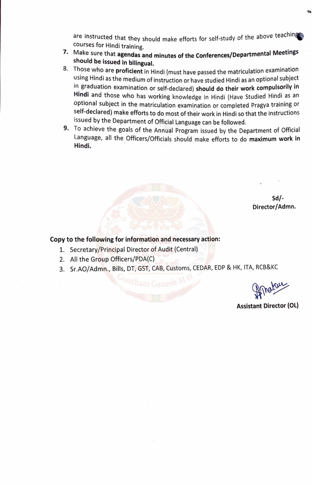

ಇದು Google Translate ಮಾಡಿದ ಯಂತ್ರ ಅನುವಾದ, ಓದಲು ಅನುಕೂಲವಾಗಲೆಂದು ಮಾತ್ರ. ತಪ್ಪುಗಳಿರಬಹುದು. ಅಧಿಕೃತವಾದುದು ಮೂಲ ಹಿಂದಿ ದಾಖಲೆ ಮಾತ್ರ.
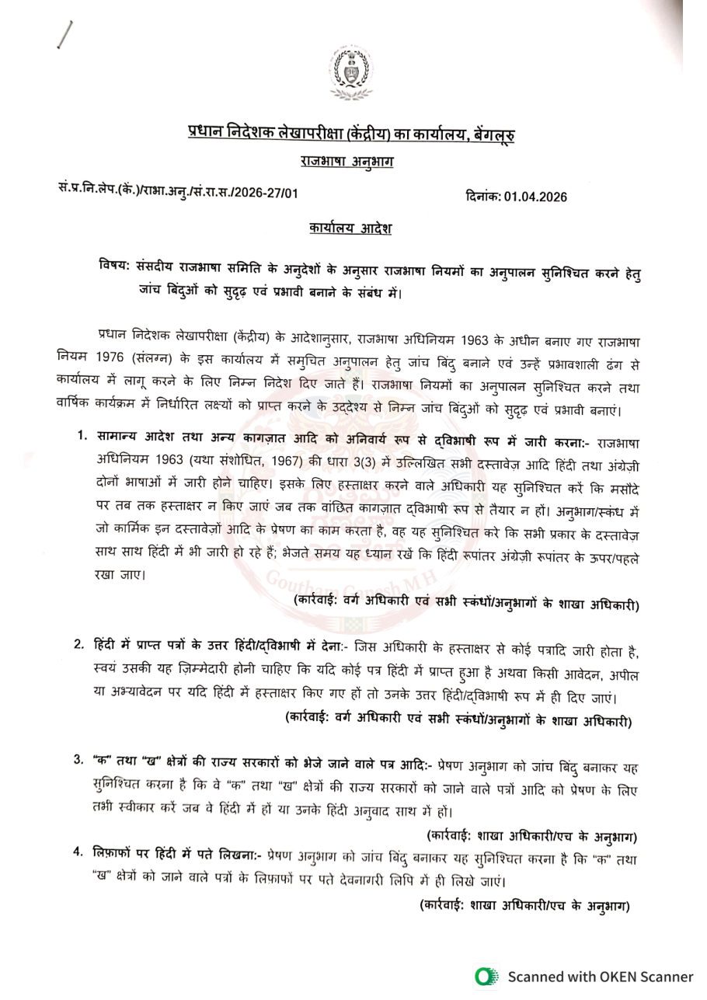
Office of the Principal Director of Audit (Central), Bengaluru - Official Language Section
S.P.R.L.(Central)/R.R./R.S./2026-27/01, Date: 01.04.2026
office order
Subject: Regarding strengthening and effective checking points to ensure compliance with the official language rules as per the instructions of the Parliamentary Official Language Committee.
As per the orders of the Principal Director of Audit (Central), the following instructions are given to create check points for proper compliance in this office of the Official Language Rules 1976 (attached) made under the Official Language Act 1963 and to implement them effectively in the office. In order to ensure compliance with the official language rules and to achieve the goals set in the annual program, make the following check points strong and effective.
1. Issuance of general orders and other documents etc. compulsorily in bilingual form:- All documents etc. mentioned in Section 3(3) of the Official Language Act 1963 (as amended, 1967) should be issued in both Hindi and English languages. For this, the signing officers should ensure that the draft is not signed until the desired documents are prepared bilingually. The personnel in the section/wing who dispatch these documents etc. should ensure that all types of documents are simultaneously issued in Hindi; While sending, keep in mind that the Hindi version should be placed above/before the English version. (Action: Class Officers and Branch Officers of all Wings/Sections)
2. To give answers to the letters received in Hindi in Hindi/bilingual: - It should be the responsibility of the officer under whose signature any letter is issued that if any letter is received in Hindi or if any application, appeal or representation is signed in Hindi, then their answers should be given in Hindi/bilingual form only. (Action: Class Officers and Branch Officers of all Wings/Sections)
3. Letters etc. sent to the State Governments of "A" and "B" regions: - The dispatch section has to be made a check point to ensure that they accept letters etc. sent to the State Governments of "A" and "B" regions for dispatch only if they are in Hindi or accompanied by their Hindi translations. (Action: Branch Officer/Section of H)
4. Writing addresses on envelopes in Hindi: - Despatch section has to be made a checking point to ensure that the addresses on the envelopes of letters going to "A" and "B" areas are written in Devanagari script only. (Action: Branch Officer/Section of H)
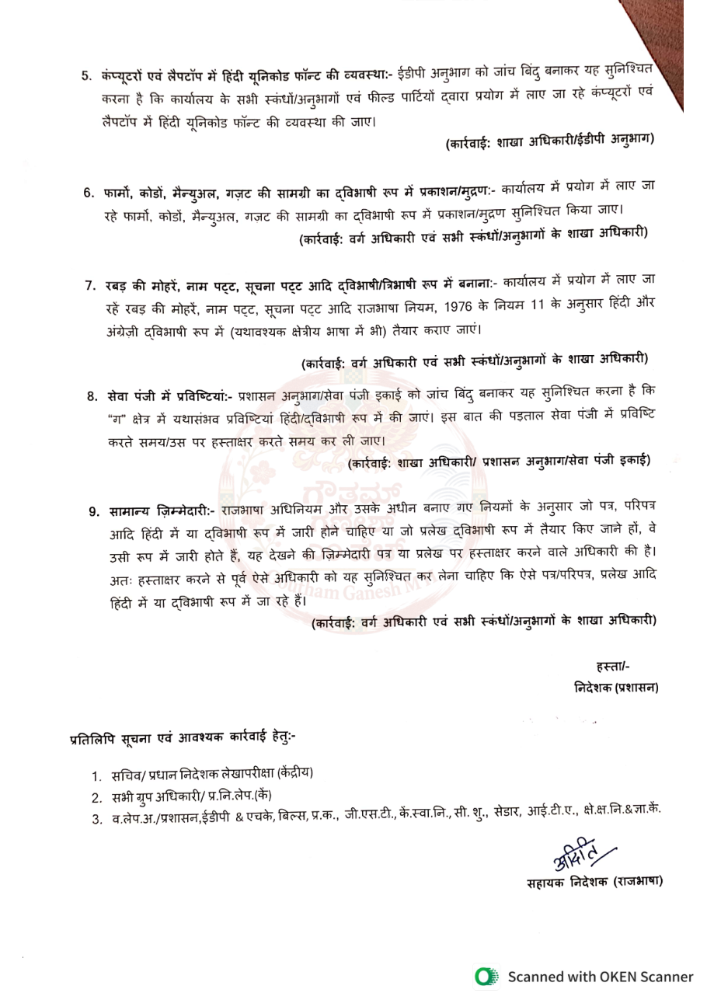
5. Provision of Hindi Unicode font in computers and laptops: - By making the EDP section the checking point, it is to be ensured that provision of Hindi Unicode font is made in the computers and laptops being used by all the wings/sections and field parties of the office. (Action: Branch Officer/EDP Section)
6. Publication/printing of forms, codes, manuals, gazette contents in bilingual form:- Publication/printing of forms, codes, manuals, gazette contents being used in the office should be ensured in bilingual form. (Action: Class Officers and Branch Officers of all Wings/Sections)
7. Making rubber stamps, name plates, notice boards etc. in bilingual/trilingual form: - The rubber stamps, name plates, notice boards etc. being used in the office should be prepared in Hindi and English bilingual form (if necessary in regional language also) as per Rule 11 of the Official Language Rules, 1976. (Action: Class Officers and Branch Officers of all Wings/Sections)
8. Entries in the Service Register:- Administration Section/Service Register Unit has to be made the checking point to ensure that as many entries as possible in the field “C” are made in Hindi/bilingual form. This should be checked while making/signing the entry in the service register. (Action: Branch Officer/Administration Section/Service Register Unit)
9. General Responsibility:- According to the Official Language Act and the rules made thereunder, it is the responsibility of the officer signing the letter or document to see that the letters, circulars etc. which should be issued in Hindi or in bilingual form or the documents which are to be prepared in bilingual form, are issued in that form. Therefore, before signing, such officer should ensure that such letters/circulars, documents etc. are being sent in Hindi or in bilingual form. (Action: Class Officers and Branch Officers of all Wings/Sections)
Hasta/- Director (Administration)
For copy information and necessary action:- 1. Secretary/Principal Director of Audit (Central) 2. All Group Officers/PTO(s) 3. PTO/Administration, EDP & HK, Bills, PWD, GST, CPC, CSU, CEDAR, ITA, R.P. And G.K.
Assistant Director (Official Language)

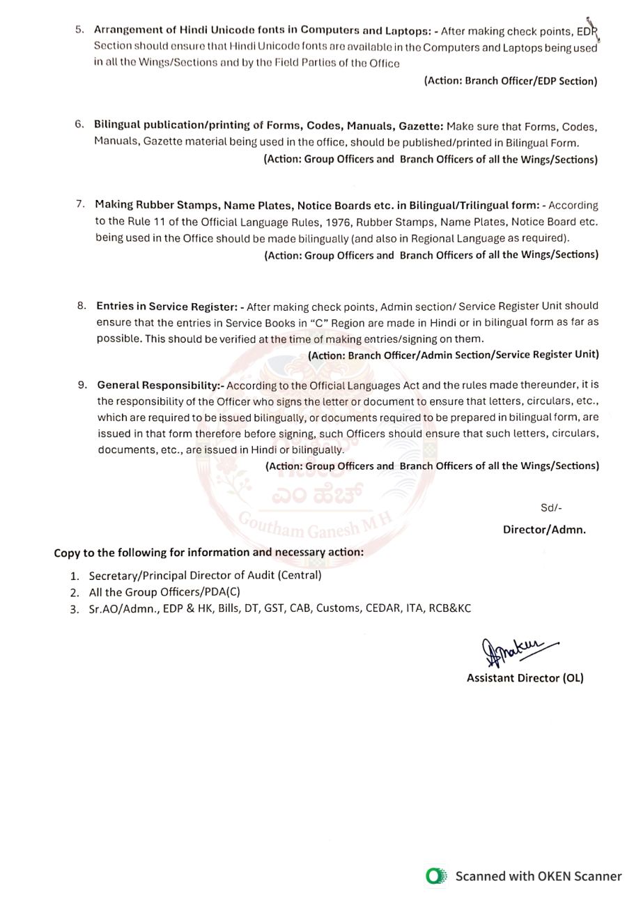


ಇದು Google Translate ಮಾಡಿದ ಯಂತ್ರ ಅನುವಾದ, ಓದಲು ಅನುಕೂಲವಾಗಲೆಂದು ಮಾತ್ರ. ತಪ್ಪುಗಳಿರಬಹುದು. ಅಧಿಕೃತವಾದುದು ಮೂಲ ಹಿಂದಿ ದಾಖಲೆ ಮಾತ್ರ.
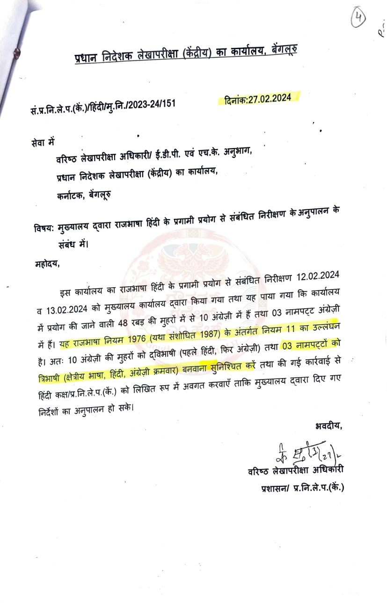
Office of the Principal Director of Audit (Central), Bengaluru
No. PDA(C)/Hindi/M.N./2023-24/151 Dated: 27.02.2024
To, Senior Audit Officer, E.D.P. And H.K. Section, Office of the Principal Director of Audit (Central), Karnataka, Bengaluru
Subject: Regarding compliance of inspection related to progressive use of official language Hindi by the Headquarters.
Sir,
Inspection of this office related to progressive use of official language Hindi was done by the Headquarters Office on 12.02.2024 and 13.02.2024 and it was found that out of 48 rubber seals used in the office, 10 are in English and 03 name plates are in English. This is a violation of Rule 11 under the Official Language Rules 1976 (as amended in 1987). Therefore, ensure that 10 English seals are made bilingual (first Hindi, then English) and 03 name plates are made trilingual (regional language, Hindi, English sequentially) and the action taken should be informed in writing to the Hindi Cell/Principal Director of Audit (Central) so that the instructions given by the Headquarters can be complied with.
Sincerely, senior audit officer Administration/Principal Director of Audit (Central)

Office of the Principal Director of Audit (Central), Bengaluru
No. PDA(C)/OL Sec./P.OL.C./2024-25/18 Dated: 29.04.2024
To, Senior Audit Officer/ E.D.P. And H.K. Wing, Office of the Principal Director of Audit (Central), Karnataka, Bengaluru
Subject: Regarding compliance with the inspection questionnaire of the Parliamentary Official Language Committee.
Sir,
Regarding compliance with the inspection questionnaire of the Parliamentary Official Language Committee, information regarding computer/laptop facilities and office website should be filled in the prescribed form (attached) and sent to the Official Language Section as soon as possible.
Apart from this, under Rule 11 of the Official Language Rules 1976, ensure that the rubber seals are made bilingual (first Hindi, then English) and all the name plates are made trilingual (regional language, Hindi, English sequentially) and inform the Official Language Section/Principal Director of Audit (Central) in writing about the action taken so that the instructions given by the Official Language Department can be complied with.
This issues with the approval of the Principal Director of Audit (Central).
Sincerely, Attachment: Form above senior audit officer Administration/Principal Director of Audit (Central)

Office of the Principal Director of Audit (Central), Bengaluru reminder
No. PDA(C)/OL Sec./P.OL.C./2024-25/59 Dated: 03.07.2024
To, Senior Audit Officer/EDP&HK, Office of the Principal Director of Audit (Central), Karnataka, Bengaluru
Subject: Regarding compliance with the inspection questionnaire of the Parliamentary Official Language Committee Reference: Letter no. dated 27.05.2024 sent by the Official Language Section. PDA(C)/OL Sec./P.OL.C./2024-25/33
Sir,
Please see the letter under reference, through which a request was made to fill in the prescribed form and send the information regarding computer/laptop facilities and office website to the Official Language Section as soon as possible in relation to the compliance of the inspection questionnaire of the Parliamentary Official Language Committee.
Apart from this, under Rule 11 of the Official Language Rules, 1976, a request was also made to ensure that the rubber seals are made bilingual (first Hindi, then English) and all the name plates are made trilingual (regional language, Hindi, English sequentially) and to inform the Official Language Section/Principal Director of Audit (Central) in writing about the action taken.
In this regard, it is informed that the above information has not yet been received by the Official Language Section/Principal Director of Audit (Central). A request was made to send the information as soon as possible. Therefore, it is again requested that after receipt of this reminder, please send the said information within 07 days.
Attached: As required. Senior Audit Officer/Administration Principal Director of Audit (Central), Bengaluru

Office of the Principal Director of Audit (Central), Bengaluru Reminder-II
No. PDA(C)/OL Sec./P.OL.C./2024-25/70 Dated: 24.07.2024
To, Senior Audit Officer/EDP&HK, Office of the Principal Director of Audit (Central), Karnataka, Bengaluru
Subject: Regarding compliance with the inspection questionnaire of the Parliamentary Official Language Committee Reference: 1. Letter no. dated 27.05.2024 sent by the Official Language Section. PDA(C)/OL Sec./P.OL.C./2024-25/33 2. Official Language Section's reminder no. dated 03.07.2024. PDA(C)/OL Sec./P.OL.C./2024-25/59
Sir,
Please review the letters under reference. Through the letter No. 1 under reference, a request was made to fill in the prescribed form and send the information regarding computer/laptop facilities and office website to the Official Language Section as soon as possible, regarding compliance with the inspection questionnaire of the Parliamentary Official Language Committee.
Apart from this, under Rule 11 of the Official Language Rules, 1976, a request was also made to ensure that the rubber seals are made bilingual (first Hindi, then English) and all the name plates are made trilingual (regional language, Hindi, English sequentially) and to inform the Official Language Section/Principal Director of Audit (Central) in writing about the action taken.
Due to non-receipt of information on time, on 03.07.2024, Senior Audit Officer/EDP. And H.K. A reminder was issued addressed to in which additional time of 07 days was given to send the information (Refer letter no. 2 under reference).
But, even after that the above information has not yet been received by the Official Language Section/Principal Director of Audit (Central). Therefore, it is again requested that after receipt of this Reminder-II, please send the above information within 07 days.
Attachments: As per. Senior Audit Officer/Administration Principal Director of Audit (Central), Bengaluru